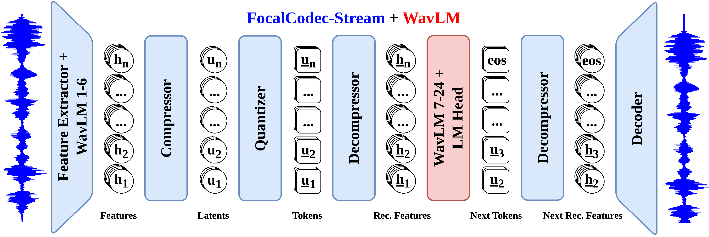

WavSLM: Single-Stream Speech Language Modeling via WavLM Distillation
Abstract
Large language models show that simple autoregressive training can yield scalable and coherent generation, but extending this paradigm to speech remains challenging due to the entanglement of semantic and acoustic information. Most existing speech language models rely on text supervision, hierarchical token streams, or complex hybrid architectures, departing from the single-stream generative pretraining paradigm that has proven effective in text. In this work, we introduce WavSLM, a speech language model trained by quantizing and distilling self-supervised WavLM representations into a single codebook and optimizing an autoregressive next-chunk prediction objective. WavSLM jointly models semantic and acoustic information within a single token stream without text supervision or text pretraining. Despite its simplicity, it achieves competitive performance on consistency benchmarks and speech generation while using fewer parameters, less training data, and supporting streaming inference.

Figure 1: WavSLM architecture. Raw speech is processed by FocalCodec-Stream (blue), which includes the feature extractor and lower WavLM layers, followed by a compressor, quantizer, decompressor, and decoder to produce a low-bitrate, single-stream sequence of discrete tokens. The decompressor converts tokens back into continuous features that are compatible with the upper WavLM layers (red). These layers are used as a causal speech language modeling backbone, with a lightweight language modeling head on top. The model is trained with a next-chunk prediction objective, jointly predicting $C=4$ tokens at each autoregressive step.
Audio Samples
For each sample, we provide an audio prompt and four continuations generated by each model, all with the same duration as the prompt.
Please note
Chrome is the preferred browser.
Use headphones for best experience.
Please adjust volume before playing samples.
Audio files may take time to load depending on hosting.